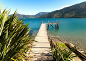
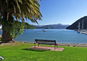

Marlborough Sounds
The Marlborough sounds offer an intricate series of bays, coves and waterways. The beauty and tranquillity of this area brings visitors back year after year. This is one of New Zealand's best kept secrets and a must-do for anyone looking for a relaxing holiday.
Because of its isolation, boats are the most popular way to get around where you can explore the area at your own pace. A few days spent here gives you the chance to relax and completely unwind. You will leave feeling fully rejuvenated and ready to continue with the rest of your holiday.
Picton: For those visitors arriving by ferry from Wellington, Picton will be the first town in the South you set foot on. The small port town is located at the Southern end of the sounds and this is where the Cook Straight Ferries dock. Picton is a busy town with lots of charm and plenty of attractions for the outdoor enthusiast.